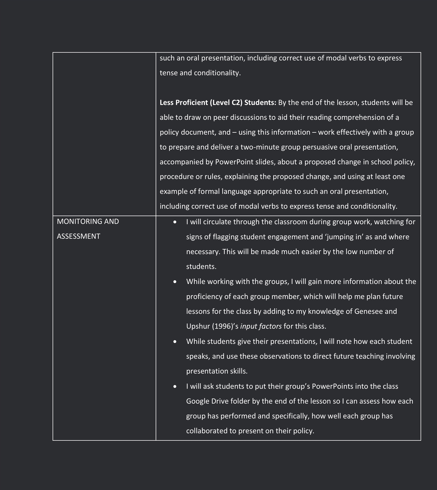

Introduction
Every lesson starts with a plan, and every plan is built on the twin pillars of a learning objective and a pedagogical approach. The objective of the 75-minute Year 10 EAL lesson explained herein is to bolster students’ ability to work effectively in a group and command modal verbs to express conditionality, and to present information to their peers; this objective is further explicated below. This lesson is built upon Nunan’s (2004) task-based language teaching approach, used in combination with the Learning and Teaching Cycle clinical teaching approach to facilitate a well-structured, learner-centric experience that both challenges and supports students in their learning.
Context
Before I explain the key points of this task-based lesson plan, we must first review both the setting in which this lesson is to take place and the learners with whom I will be working during this lesson.
It should be noted that this lesson plan is not directly based on any lessons either taught or observed during my Clinical Teaching Practice placement – this lesson is purely hypothetical. However, the school context and the learners themselves are drawn from my placement school, as explained in more detail below. Also note that the school policy documents used as artefacts for this lesson plan are not attached to this assignment, as deidentification sufficient to satisfy reasonable anonymity requirements would render the documents entirely useless. The documents themselves are also not crucial to interpretation of the lesson plan.
The School
The school in which this lesson is to take place, hereafter referred to as School W for the purposes of anonymity, is a government secondary school in the western suburbs of Melbourne. A brief overview of available demographic information regarding School W is quite revealing: the MySchool database informs us that School W has an ICSEA value of ~1100 (exact value obfuscated to maintain school anonymity), indicating an above-average level of educational advantage (MySchool, 2019). This is reflected in the fact that every School W student has access to a personal computing device, facilitating the use of ICT as a teaching and learning resource in the classroom. Less than 1% of School W students identify as Indigenous or Torres Strait Islander, and 21% of students come from a language background other than English (MySchool, 2019). This latter statistic is slightly above the 19% statewide average of LBOTE students, but not significantly so (Victorian State Government Department of Education and Training, 2018). School W has no dedicated TESOL/EAL teachers on staff, and the single dedicated EAL/D English stream is taught by the school’s Italian teacher.
The Students
During my teaching placement, I worked primarily with Year 10 English classes. 10 students in the 2019 Year 10 cohort were classified by School W as being EAL learners. Though I unfortunately did not have the chance to observe or teach these students in a dedicated EAL teaching environment, I did work with all 10 of them in the ‘mainstream’ English classroom. The lesson plan will be predicated on a hypothetical situation involving me teaching a class of only these 10 students, though in reality no such class existed.
The students themselves are a diverse group. Four students come from Mandarin-speaking backgrounds, three from Japanese-speaking backgrounds, and three from German-speaking backgrounds (these latter three being international exchange students). Some students have been in Australia for several years, while others arrived here as recently as midway through Term 1 of the 2019 school year (the German international students). My informal assessments of these students’ levels of English proficiency, based upon observations in class, marking of assignments, and my direct conversations with the students, indicate that the levels of English proficiency in this hypothetical class may range from levels C2 to C4 of the 2019 Draft English as an Additional Language Curriculum (Victorian Curriculum and Assessment Authority, 2019). This wide range of English proficiencies requires careful planning of the lesson to ensure that less-proficient students are supported, while also ensuring that more-proficient learners are kept interested and engaged in their learning. This is a dilemma faced to a degree by teachers in all subject areas and at all year levels. Here, however, it is exacerbated, as rather than dealing with differentials in surface-level subject knowledge, I must contend with a significant differential in knowledge of the very medium of instruction through which the lesson will be primarily delivered.
Key Points
Harmer (2001) proposes several key elements of a lesson plan. Firstly, Harmer states that before a lesson can be planned, the teacher must consider who the lesson is being planned for – consider the students themselves. As discussed above, the group of 10 students comes from three different linguistic backgrounds, and within those backgrounds will be variations in dialect and L1 knowledge. Harmer specifies that we must consider students’ levels of motivation and their learning styles; from my observations of and conversations with these 10 students, the first note is that the students from each linguistic background (Mandarin, Japanese, German) have formed friendship groups with those of the same L1 – as is to be expected when surrounded by students with a different L1. These three groups of students all seem to be motivated and enthusiastic learners, for the most part, judging by their exceptional willingness to contribute in the classroom. Less is known about their individual learning styles, but it has been noticed that many of them do not seem to respond well to the lecture-style approach adopted by many teachers at School W; thus, a different approach will need to be adopted for this lesson.
Genesee and Upshur (1996, pp. 30-31) propose additional “input factors” to consider when planning a lesson, including the experience, training and attitude of the teacher, available physical resources and learning spaces, and the time available for instruction. The teacher-related input factors are, of course, known: I have comparatively little experience or training, and though I consider myself to be of an open-minded, positive attitude, translating this attitude into a pedagogical approach is easier said than done. Regarding physical resources and teaching spaces, we must work within the constraints of a largely traditional classroom setup, replete with the traditional trappings of such a space – stationery, whiteboard, etc. However, as mentioned earlier, students do have personal devices – laptops and iPads – which open up the possibility of ICT-related activities. The time available is another known: as specified by the assignment brief, this is to be a 75-minute lesson.
Harmer (2001) frames the actual planning of a lesson in terms of four main elements: activities, skills, language, and content. Each of these plays into the lesson plan in a particular way, and each must be considered to plan an effective lesson.
• Activities: Harmer’s activities strand of lesson planning involves what students will be physically doing during the lesson. For most of this lesson, students will be divided into groups of 3 or 4, working collaboratively to find information and create a PowerPoint presentation.
• Skills: for Harmer, skills involves the language skills which students will develop during the lesson. As we know, this lesson is focused on speaking-listening skills; specifically, the combination of group work and a presentation means students will develop reading comprehension, conversational turn-taking, and formal presentation skills, along with the correct usage of modal verbs as detailed below in the Content section.
• Language: here, we consider the specific language we intend to have the students learn. Harmer cautions against using language as the only planning device for a lesson, as this can lead to drill-centric lessons with little interactivity. We will not encounter this issue, as it has been determined that this lesson will be focused on group work and collaboration. Students will specifically be focusing on formal language of the sort appropriate for a presentation – avoiding colloquialisms and speaking clearly and cohesively.
• Content: a good lesson is an engaging one, and one of the largest determiners as to whether a lesson is engaging is the content being taught. Pedagogues and academics have put forth a plethora of theories on how best to make a lesson’s content engaging, but one consensus among educational theorists is that content should be somehow relevant to the lifeworlds of the students themselves – this gives students a clear ‘way in’ to the content at hand, as they can relate that content to their own experiences (Harmer, 2001; Lyons, Ford, & Slee, 2014). This lesson will involve students reading, discussing and critiquing school policy documents – the very documents which dictate what students may and may not do for the more than 30 hours per week which they spend at school. While these documents themselves may be somewhat ‘dry’, the content of the documents – the ‘school rules’, as it were – should engage the students. The thinking behind this is discussed further in the Rationale section below. The explicit language focus of this lesson’s content is on the use of modal verbs to express both tense and conditions: “we would like to…”, “the effects have been…”, and similar constructions. Students will be giving brief presentations on changing a school rule, and these presentations will be scaffolded so that students use appropriate modal verbs to express tense and conditionality. Students have previously been introduced to modal verbs by another EAL teacher, but have not yet done any practical exercises involving them.
The Lesson

Rationale
This lesson has been planned with the primary goal of engaging students. Without engagement, there will be little to no learning; if I fail to engage my students, I have failed to clear even the first hurdle of planning a successful lesson. As mentioned in my Key Points above, I have chosen content for the lesson which should serve to make the lesson as a whole more relevant for the students. Students are reading, discussing, reshaping and presenting on the topic of the school rules that shape their school-based lives, and such meaningful content that links to students’ lifeworlds in this way is a solid foundation for an engaging lesson (Marks, 2000).
With the hurdle of engaging content cleared, we now move to the ways in which that content will be taught. As mentioned in the lesson plan itself, I have taken a planning approach that draws heavily upon the tenets of Nunan’s Task-Based Language Teaching framework. The ‘task’ around which this lesson is based is, of course, the preparation for and delivery of a presentation about changing a school rule. This task is intended to challenge students in a variety of ways, and as such, it requires students to exercise a range of skills and competencies in order to succeed. This is reflected in my learning objectives for the lesson, which state (skills and competencies bolded) that students will read, extract and discuss information, work with a group, prepare a brief oral presentation accompanied by PowerPoint slides, support the presentation with evidence and reasoning, and deliver the presentation using appropriate modal (conditional) verbs. What we have here is a task requiring synthesis of a wide continuum of skills. While the end product of the task – an oral presentation – is primarily a speaking-focused one, the pre-task and during-task segments of the lesson also draw on reading and writing to support students’ speaking and listening skills. The intent is that exercising such a variety of skills within a single lesson will engage students, as clear links have been found between such multifaceted lessons and high levels of student engagement (Tsai, et al., 2008).
This intensely multimodal lesson will not only ensure that students are kept engaged, but also that they are challenged. Here we turn to Gibbons’ (2009) concept of the ‘challenge zone’ – the idea that students learn best when facing a challenging task. A lesson that demands students exercise reading, writing, speaking and listening skills, through the learning modes of individual work, group work and presentations, should be nothing if not challenging. However, as Gibbons explains, such ‘challenge zone’-based learning is only at its most effective if accompanied by high support from the teacher. High-challenge, low-support teaching can be disastrous for learner confidence (Hammond, 2006), and so it is crucial that such a task be accompanied by high support from the teacher – in this case, me. The relatively low number of students in this hypothetical class – 10 students at most – means that, as mentioned in the lesson plan itself, I will be able to move around the classroom and provide support as and when necessary. This support may take the form of ‘jumping in’ to a group’s conversation with a suggestion or clarification for the group, or simply pointing a group member in the right direction. Being mobile in this way means I will in theory be able to provide the high level of support necessary for this challenging task. Another facet of this support is the scaffolding provided by the ‘Change a Rule!’ handout (see Appendix A). This worksheet provides groups with a clear way to structure their ideas about changing a school policy, reducing cognitive load while also providing a platform for exercising their reading and writing skills.
Another high-challenge aspect of the lesson is the standards to which even the less proficient students are being held – the sections of the learning objectives which do not vary according to student proficiency. All three differentiated learning objectives specify that students will be able to work effectively with a group to prepare and deliver a two-minute group persuasive oral presentation. While this aspect of the learning objective may be less challenging for ‘proficient’ students, those who are operating in the ‘less proficient’ and ‘moderately proficient’ bands will find both effective group work (especially across L1 boundaries) and the delivery of a presentation quite challenging. A common trap into which many teachers may fall is to have lower standards for students who they see as being ‘less capable’, but this approach can be incredibly harmful to students’ self-image and levels of achievement (Black & Wiliam, 2005); if a student believes they are being stereotyped as ‘less capable’, their own self-imposed standards may fall, unduly limiting their potential both in and outside the classroom. Setting high standards for every student in this classroom – while providing the high levels of support discussed above – will ensure that each student is achieving at the highest level.
A final facet of the high-challenge aspects of this lesson is that students are operationalizing knowledge that, until now, has been purely theoretical: their knowledge of modal verbs. Students’ work with modals thus far has been limited to skill-and-drill sentence completion exercises – being given a sentence with a gap, and choosing appropriate modals to fill that gap. In this lesson, students are being expected to use the correct modal verbs for each section of their group presentation – have been for the previous effects of their chosen rule, will be for the proposed rule change, and would be for the positive effects of the change. This correct usage is heavily scaffolded by the Change a Rule! template, which includes sentence stems that explicitly provide the correct modals for each section of the presentation. Modal verbs are an integral part of the English language, serving to convey tense, conditionality and other subtler semantic information, and this lesson will serve to begin scaffolding students in the proper usage of this complex syntactic category.
Above and beyond these details lies the question of learner-centeredness. A learner-centric approach is hugely beneficial in any classroom environment, but especially in the TESOL/EAL classroom (Brown, 2003; Whisler, 1997). There are many reasons for this, but the foundational reason lies in Krashen’s ‘affective filter’ hypothesis, which posits that all learners – and especially second-language or additional-language learners – learn more effectively when in an environment that makes them feel at ease (Zafar, 2009). While the merits of this hypothesis have been the subject of considerable debate, the underlying assertion - that being comfortable equates to effective learning – seems sound. Students learn more effectively when they are somewhere they want to be. How, then, do we achieve this holy grail of pedagogy? A learner-centric approach is certainly a good place to start (Nunan, 2013). This lesson is learner-centric in that, for much of the lesson, the work is being done by students, not by me as their teacher. The initial Engagement section is slightly teacher-centric, perhaps dangerously so, but from the Building Knowledge stage onwards, students drive the lesson forwards. The Change a Rule! templates are filled out not with ideas derived from textbooks or lecture-style content delivery, but with the students’ own ideas based on their group’s policy. While the teacher does act as facilitator for the group work – organizing the groups, providing the policies and handouts, and so on – from that point onwards, the learning is something students actively do for themselves. They work through the policies, find and discuss the rules, propose a change and present their case to the class, and while I provide as much support as necessary, that support takes the form of facilitating student discussion, not simply spoon-feeding them my own ideas. Handing the reins of the lesson over to students gives them a sense of agency that will bolster their confidence and help them feel comfortable as learners in the classroom, in turn allowing their affective filters to fall, making teaching and learning more effective.
Another decision made in planning this lesson is to ensure, if possible, that groups are composed of students from a mix of language backgrounds. This is because if groups were composed of speakers with a common L1, they would be less likely to attempt collaboration using English. I cannot stress heavily enough that there would be no issue with this whatsoever - students’ use of their L1 in the EAL classroom is well-established as a benefit for a number of reasons (Piccardo, 2013). However, because the overarching goal of the lesson is to work on students’ speaking and listening in English, arranging groups to encourage using English as a group-wide lingua franca will work well.
The final point to be justified is my decision not to include an explicit Reflection
stage in this lesson plan. While this is partially due to practical time constraints (the lesson is chronologically ambitious as-is, and including an additional stage would require sacrificing valuable group work time), the Reflection stage has also been left out of this plan for reasons related to learner comfort. Personal or group reflection in the classroom – asking ourselves how we did, what we did well, and what we could change or improve – can be an incredibly challenging and confronting experience (Lucas, 2012), and this is only magnified when students are learning, working and presenting in a language other than their L1. Allowing students to put some chronological distance between their presentations and reflecting on those presentations should make such reflection less confronting, and quite possibly more productive.
References
Australian Curriculum, Assessment and Reporting Authority. (2019). Find a School. Retrieved April 12, 2019, from MySchool: https://www.myschool.edu.au/
Black, P., & Wiliam, D. (2005). Inside the black box: Raising standards through classroom assessment. New York: Granada Learning.
Brown, K. L. (2003). From teacher-centered to learner-centered curriculum: Improving learning in diverse classrooms. Education, 124(1), 281-290.
Davies, L. M., Anderson, M., Deans, J., Dinham, S., Griffin, P., Kameniar, B., . . . Tyler, D. (2013). Masterly preparation: embedding clinical practice in a graduate pre-service teacher education programme. Journal of Education for Teaching, 39(1), 93-106.
Ellis, R. (2002). The Methodology of Task-Based Teaching. Osaka: Kansai University Institutional Repository.
Genesee, F., & Upshur, J. A. (1996). Classroom-based evaluation in second language education. New York: Press Syndicate of the University of Cambridge.
Gibbons, P. (2009). English learners, academic literacy, and thinking: Learning in the challenge zone. Portsmouth: Heinemann.
Hammond, J. (2006). High challenge, high support: Integrating language and content instruction for diverse learners in an English literature classroom. Journal of English for Academic Purposes, 5(4), 269-283.
Harmer, J. (2001). Planning Lessons. In J. Harmer, The practice of English language teaching (3rd ed., pp. 308-320). London: Longman.
Lucas, P. (2012). Critical reflection: What do we really mean? 2012 Australian Collaborative Education Network National Conference (p. 163). Melbourne: Australian Collaborative Education Network.
Lyons, G., Ford, M., & Slee, J. (2014). Classroom management: creating positive learning environments (4th ed.). Melbourne: Cengage Learning Australia.
Marks, H. M. (2000). Student engagement in instructional activity: Patterns in the elementary, middle, and high school years. American Educational Research Journal, 37(1), 153-184.
Nunan, D. (2004). Task-based language teaching. Cambridge: Cambridge University Press.
Nunan, D. (2013). Learner-centered English language education: The selected works of David Nunan. New York: Routledge.
Piccardo, E. (2013). Plurilingualism and curriculum design: Toward a synergic vision. Tesol Quarterly, 47(3), 600-614.
Tsai, Y. M., Kunter, M., Lüdtke, O., Trautwein, U., & Ryan, R. M. (2008). What makes lessons interesting? The role of situational and individual factors in three school subjects. Journal of Educational Psychology, 100(2), 460-465.
Victoria State Government Department of Education and Training. (2018, July). Summary Statistics for Victorian Schools July 2018. Retrieved May 21, 2019, from About Victorian Schools: https://www.education.vic.gov.au/Documents/about/department/brochurejuly.pdf
Victorian Curriculum and Assessment Authority. (2019). English as an additional language curriculum: Draft for familiarisation, feedback and optional implementation.Melbourne: Victorian Curriculum and Assessment Authority.
Whisler, B. L. (1997). The learner-centered classroom and school.San Francisco: Jossey Bass Publishers.
Zafar, M. (2009). Monitoring the 'monitor': A critique of Krashen's five hypotheses. Dhaka University Journal of Linguistics, 2(4), 139-146.